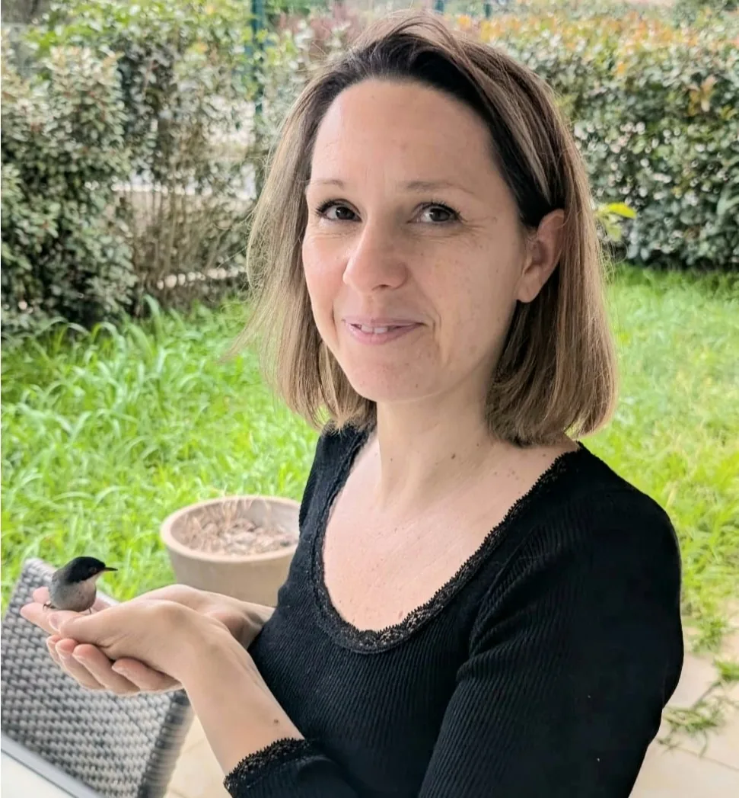

Mon histoire
La lettre que j'aurais voulu recevoir, écrite à toutes les femmes que je ne connais pas encore.

Chère belle âme,
J'ai décidé de partager avec toi mon histoire pour, d'une part, me soulager et, d'autre part, permettre aux femmes sous emprise de réaliser que la guérison se trouve en elles.
Ce récit est un exercice libérateur pour moi. Et il sera, je l'espère, un déclencheur pour toi.
À 17 ans, je suis tombée amoureuse d'un beau garçon. Je me suis vite aperçue qu'il était « nerveux », « impulsif », et « exigeant ». Ce fort caractère m'a, tout d'abord, rassurée. Puis, les « petites remarques » ont commencé :
« C'est pas comme ça qu'il faut faire ! »
« Tu ressembles à un épouvantail !! »
Et puis, sont arrivées les humiliations indirectes : « Elle sait faire la cuisine au moins ! », ou, avec ses copains (en ma présence) : « Vous avez vu ce canon !! »… et j'en passe.
Toutes ces « petites phrases » qui me semblaient anodines m'ont alourdie. Quand j'essayais de me défendre, mes arguments me revenaient directement dans la figure. Et l'autre ne lâchait pas l'affaire ! Cela devenait un dialogue de sourd dans lequel il m'écrasait de ses réponses sans fondements. J'en ressortais épuisée !!!
C'est pourquoi, j'ai, petit à petit, refusé l'affrontement.
Alors que mon amour était de plus en plus fort (c'était, en définitive, de la dépendance affective) je croyais et me persuadais que ses critiques étaient vraies. Je suis devenue ce qu'il me reprochait !
En parallèle, je me suis formée à une méthode vocale afin de rééduquer les dysphonies (pathologies vocales) dans le cadre de mon activité d'orthophoniste. Ce fut une révélation ! Cette pratique m'a amenée à lâcher mes préjugés sur la voix et m'a permis de découvrir mon authenticité. Ma manière de chanter a changé et… mon comportement également. Au point que cet homme me quitta car je n'étais plus la petite fille docile qu'il avait façonnée !
Je suis restée 15 ans avec lui. Il m'a laissée avec notre fille et… des blessures.
Je me suis reconstruite lentement. Ma pratique vocale a évolué.
Puis, j'ai rencontré un homme bienveillant. Notre relation a duré 10 ans, jusqu'à ce que je m'aperçoive que l'on n'avait rien construit ensemble. Mon rêve de famille unie s'était évanoui. Pendant 10 ans, j'avais suivi ses envies par amour. Je préférais rester avec lui en faisant taire mes désirs plutôt que d'être seule.
Aujourd'hui, je sais qui je suis et ce que je veux. Je me choisis.
Voix Sana est l'aboutissement de toutes mes expériences.
Je sais quel trajet suivre pour une reconstruction solide.
Je vous guide vers votre vérité.
Sonia